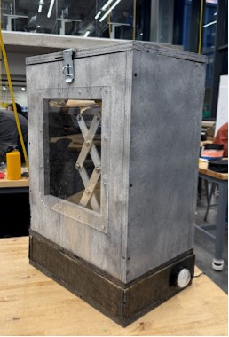
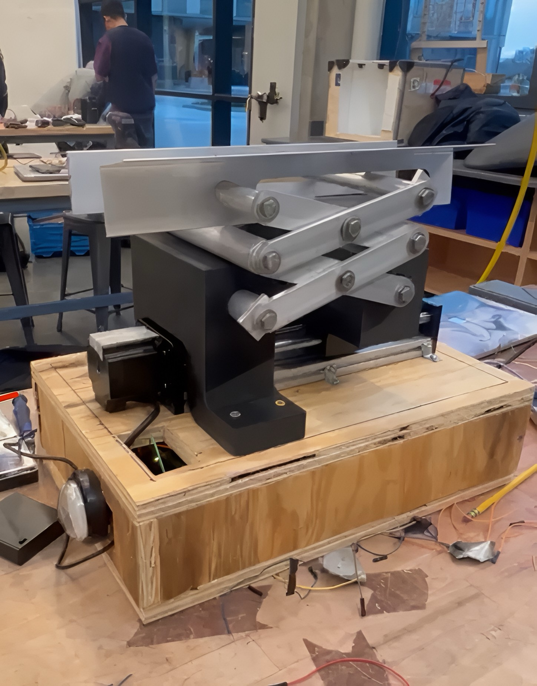
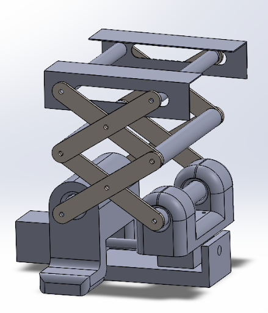
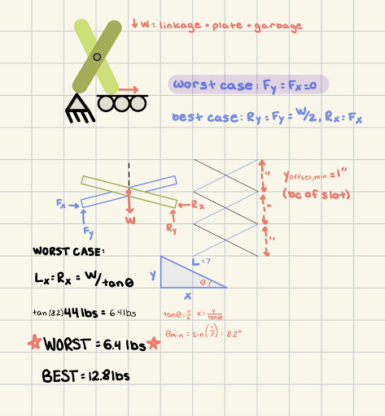
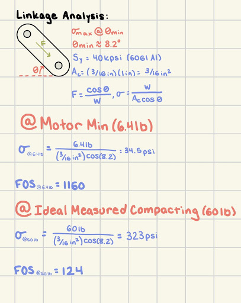

Trash Compactor
Designing and building a standalone trash compactor that automatically compresses household waste.
Overview
In a team of five, we built a standalone trash compactor with a linear actuator and scissor linkage that raise a compression plate against the lid. I developed the SolidWorks assembly and designed custom actuator mounts to connect the actuator to the linkage within the enclosure.
The working prototype completed an automated compaction cycle and received the Best Overall Project Award at Carnegie Mellon’s Mechanical Engineering Design Expo.


Design
Benchmarking highlighted a gap between permanently installed compactors and alternatives that require manual force. We focused on a standalone device with powered compression, a compact footprint, and straightforward operation.
We compared concepts using weighted criteria and selected an actuator-driven scissor linkage that could fit beneath the trash compartment. Its geometry allowed the compression plate to move vertically within the bin.
The plate rises through the bin, compresses waste against the locked lid, holds for approximately ten seconds, and retracts automatically.
The actuator’s fixed hole pattern and limited mounting locations constrained its position. I designed custom mounts around those interfaces to connect the actuator to the linkage and transfer load within the available space.
I used the assembly CAD to integrate the mounts, actuator, linkage, and surrounding structure before fabrication.

Analysis & Validation
We used free-body diagrams to evaluate force transmission through the scissor linkage and compare the required load with the actuator’s capacity.
The calculations indicated that the actuator would limit performance before the aluminum linkage reached its structural capacity. Because force transmission depends on linkage geometry and load distribution, the analysis guided how we interpreted the prototype’s behavior.
Testing supported this finding: the linkage remained intact while the actuator stalled under heavier loading.


Fabrication & Iteration
We shared milling, turning, 3D printing, assembly, and testing. The linkage used manually machined aluminum bars and rods, while the custom actuator mounts were 3D printed. We integrated the mechanism with the enclosure, electronics, compression plate, hinges, and lid-locking hardware.
The prototype completed the automated cycle, but heavier loads exceeded the actuator’s capacity. A higher-capacity actuator is the next design change to evaluate, followed by a new assessment of linkage, mount, and lid loads.
Manufacturing & Cost
The prototype used manual machining, 3D printing, and a wooden enclosure for rapid fabrication. I contributed to the production proposal by selecting component manufacturing processes and refining geometry for the proposed methods and assembly sequence. These proposals would require supplier review before production.
Results
We demonstrated automated compaction within a standalone trash-bin enclosure. Testing identified actuator capacity as the performance limit before observed linkage failure, giving the next iteration a specific component and load case to address.